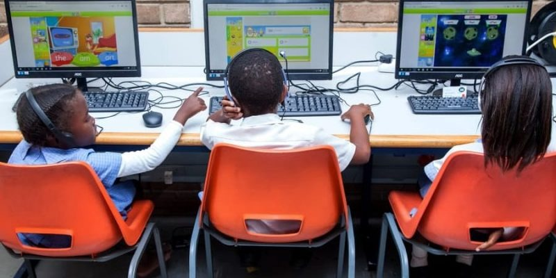
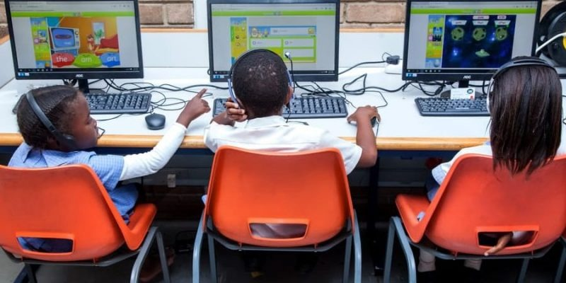

Introducción
Bienvenidos a nuestro Portafolio Digital Interactivo, una ventana creativa e innovadora al proyecto de grado desarrollado en el marco del curso Diseño y Construcción de Recursos Educativos Digitales. Esta propuesta surge de una necesidad concreta en el contexto educativo actual: potenciar el uso responsable y pedagógico de los recursos digitales en el área de Filosofía, empleando metodologías activas como el Aprendizaje Basado en Juegos (ABJ). Este espacio virtual ha sido diseñado no solo como una evidencia académica, sino como un recurso funcional, navegable e inspirador. En él se integran múltiples herramientas TIC, avatares explicativos, botones interactivos y contenidos multimedia que guían al usuario en un recorrido intuitivo por cada etapa del proceso investigativo. La riqueza de este portafolio radica en su capacidad para mostrar cómo la tecnología, bien empleada, puede transformar el aula en un escenario de descubrimiento, reflexión y juego. Cada elemento ha sido cuidadosamente elaborado para reflejar tanto el rigor académico como la creatividad que exige la educación del siglo XXI.

Identificando
Avatar
Avatar 2
Póster Digital
Referenciando
Diseñando
Créditos
Referencias
Agradecimientos
[Aquí tus agradecimientos]
Licenciamiento
Creative Commons
Mapa de navegación
La INSTITUCIÓN EDUCATIVA PUEBLO BELLO se encuentra ubicado en el departamento de Antioquia del municipio Turbo, con dirección CORREGIDOR PUEBLO BELLO. Centro educativo perteneciente al sector «Oficial», y es de carácter Técnico / Académico.